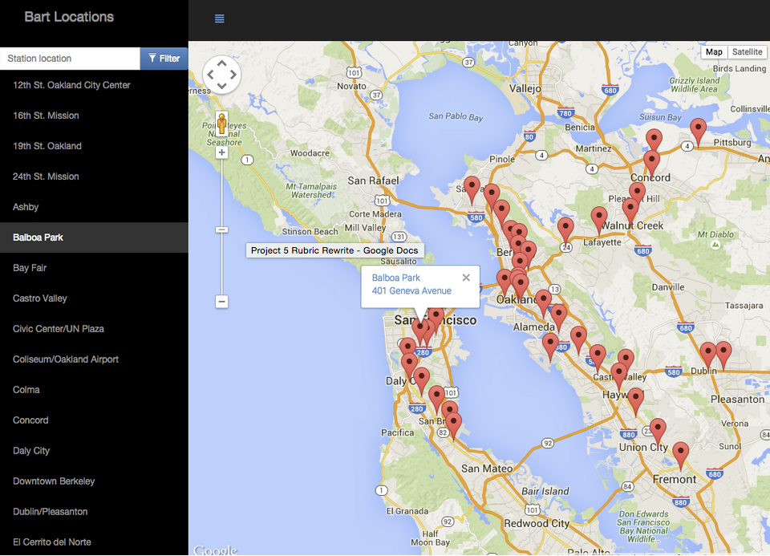
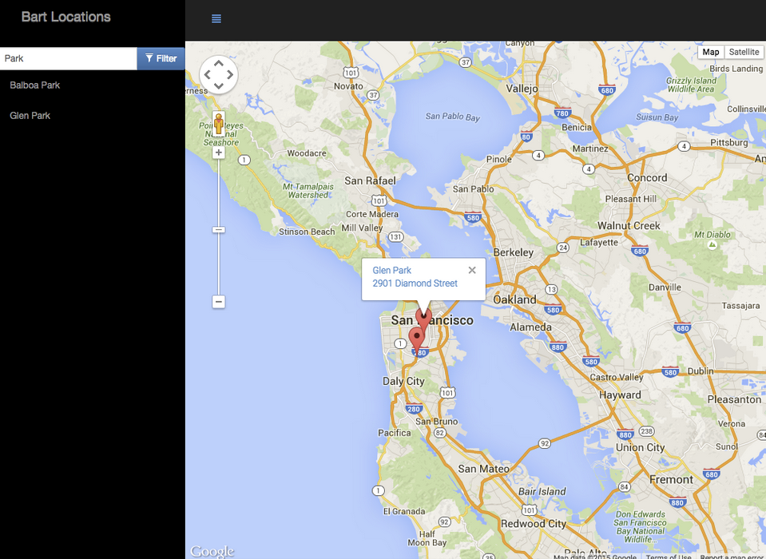
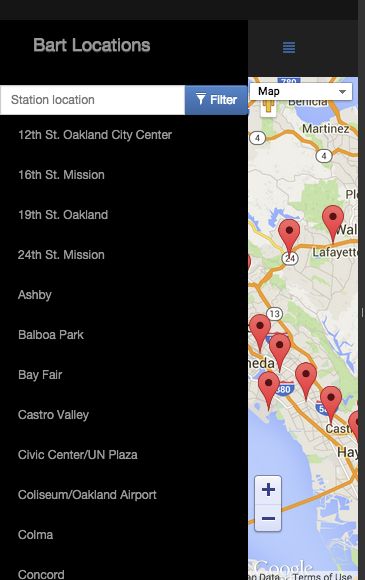

You will develop a single page application featuring a map
of your neighborhood or a neighborhood you would like to
visit. You will then add functionality to this map
including highlighted locations, third-party data about
those locations and various ways to browse the
content.
Why This Project?
The neighborhood map application is complex enough and
incorporates a variety of data points that it can easily
become unwieldy to manage. There are a number of frameworks,
libraries and APIs available to make this process more
manageable and many employers are looking for specific
skills in using these packages.
What Will I Learn?
You will learn how design patterns assist in developing a
manageable codebase. You’ll then explore how frameworks can
decrease the time required developing an application and
provide a number of utilities for you to use. Finally,
you’ll implement third-party APIs that provide valuable
data sets that can improve the quality of your
application.
How Does This Help My Career?
Interacting with API servers is the primary function of Front-End Web Developers
Use of third-party libraries and APIs is a standard and acceptable practice that is encouraged
Asynchronous programming is important to understand in today's market
2. Download the Knockout
framework. Knockout must be used to handle the list,
filter, and any other information on the page that is
subject to changing state. Things that should not be
handled by Knockout: anything the Maps API is used for,
creating markers, tracking click events on markers, making
the map, refreshing the map. Note 1:
Tracking click events on list items should be handled
with Knockout. Note 2: Creating your
markers as a part of your ViewModel is allowed (and
recommended). Creating them as Knockout observables is
not.
3. Asynchrony and Error Handling. Note that all data APIs
used in the project should
load asynchronously and errors should be handled
gracefully. In case of error (e.g. in a situation where a
third party API does not return the expected result) we
expect your webpage to do one of the following: A message
is displayed notifying the user that the data can't be
loaded, OR There are no negative
repercussions to the UI. Note: Please
note that we expect students to handle errors if the
browser has trouble initially reaching the 3rd-party site
as well. For example, imagine a user is using your
Neighborhood Map, but her firewall prevents her from
accessing the Instagram servers. Here is a reference
article on
how to block websites with the hosts file. It
is important to handle errors to give users a consistent
and good experience with the webpage. Read this
blogpost to learn more. Some JavaScript libraries
provide special methods to handle errors. For example:
refer to .fail() method discussed
here
if you use jQuery's ajax() method. We strongly
encourage you to explore ways to handle errors in the
library you are using to make API calls.
4. Write code required to add a full-screen map to your
page using the
Google Maps
API. For sake of efficiency, the map API should be
called only once.
5. If you are prompted to do so, you may want to get a
Google Maps API key, and include it as the value of
the key parameter when loading the Google
Maps API in index.html:
You may have some initial concerns with
placing your API key directly within your JavaScript
source files, but rest assured this is perfectly safe.
All client-side code must be downloaded by the client;
therefore, the client must download this API key - it is
not intended to be secret. Google has security measures
in place to ensure your key is not abused.
It is not technically possible to make anything
secret on the client-side.
6. Write code required to display map markers identifying
at least 5 locations that you are interested in within
this neighborhood. Your app should display those
locations by default when the page is loaded.
7. Implement a list view of the set of locations defined
in step 5.
8. Provide a filter option that uses an input field to
filter both the list view and the map markers displayed
by default on load. The list view and the markers should
update accordingly in real time. Providing a search
function through a third-party API is not enough to meet
specifications. This filter can be a text input or a
dropdown menu.
9. Add functionality using third-party APIs to provide
information when a map marker or list view entry is
clicked (ex: Yelp reviews, Wikipedia, Flickr images, etc).
Note that StreetView and Places don't count as an
additional 3rd party API because they are libraries
included in the Google Maps API. If you need a refresher
on making AJAX requests to third-party servers, check out
our
Intro to AJAX course. Please provide attribution to
the data sources/APIs you use. For example if you are
using Foursquare, indicate somewhere in your interface
and in your README that you used Foursquare's API.
10. Add functionality to animate a map marker when either
the list item associated with it or the map marker itself
is selected.
11. Add functionality to open an infoWindow with the
information described in step 9 (you can also populate
a DOM element with this info, but you should still open
an infoWindow, even with minimal info, like location name)
when either a location is selected from the list view or
its map marker is selected directly.
12. The app's interface should be intuitive to use. For
example, the input text area to filter locations should
be easy to locate. It should be easy to understand what
set of locations is being filtered. Selecting a location
via list item or map marker should cause the map marker
to bounce or in some other way animate to indicate that
the location has been selected and associated info window
should open above the map marker with additional
information.
Example: BART Locations San Francisco
Clicking a marker on the map should open more information
about that location.

Clicking a name in the list view should open the
information window for the associated marker.

The list of locations should be filterable with a text
input or dropdown menu. Filtering the list also filters
the markers on the map.

The web app should be mobile responsive - notice the
hamburger menu icon used to hide the list on small
screens (this is just one possible mobile
implementation).
Helpful Resources
None of these are required, but they may be helpful.
Neighborhood Map is a difficult project - that's on purpose.
You'll be starting with a blank slate and will be designing
the architecture of your app entirely on your own.
PLEASE don't copy work from other students.
We will find out and we will ask you to do the project again.
If you do get stuck, here are some tips for how to seek out
inspiration without violating the Honor Code:
Look at documentation and online tutorials FIRST.
If you do look at another student's work for inspiration
(on GitHub or elsewhere), don't copy it. Don't take any
part of it and don't download it. Review it to understand
their thought process.
Reflect on their design choices - what are some of the
tradeoffs of different decisions in their code?
Take a break, if need be, as you figure out how you will
implement your app. You have to write your own code so
understanding one implementation of it but taking the time
to think through your own implementation is extremely
important for your own learning and in producing original
work.
Return to your code and write your own implementation.
Cite any submissions you looked at to give credit where
it is due.
4. Project: Neighborhood Map
Project Submission
You will develop a single-page application featuring a map
of your neighborhood or a neighborhood you would like to
visit. You will then add additional functionality to this
application, including: map markers to identify popular
locations or places you’d like to visit, a search function
to easily discover these locations, and a listview to
support simple browsing of all locations. You will then
research and implement third-party APIs that provide
additional information about each of these locations
(such as StreetView images, Wikipedia articles, Yelp
reviews, etc).
Evaluation
Your project will be evaluated by a Udacity reviewer
according to the Neighborhood Map Project
Rubric. Be sure to review it thoroughly before you
submit. All criteria must "meet specifications" in order
to pass.
Submission
1. If build tools (such as Gulp or Grunt) are used,
submit both your source and production code in the same
repository in separate directories. These directories are
usually named src and dist
respectively.
2. If build tools are used the gulp or grunt.js file as
well as the package.json file must be included in the
submission.
3. If build tools are used, the instructions for building
the project and running the tool must be included in the
README.md. You may find the short
Writing READMEs course helpful.
6. When you're ready to submit your project go back to
your Udacity Home
, click on Project 5.1, and we'll walk you through the
rest of the submission process. Due to the high volume of
submissions we receive, please allow up up to 7
business days for your evaluation to be returned.
7. If you are having any problems submitting your project
or wish to check on the status of your submission, please
email us at frontend-project@udacity.com or visit us in
the discussion
forums.
What's Next?
You will get an email as soon as your reviewer has
feedback for you. In the meantime, review your next
project and feel free to get started on it or the
courses supporting it!